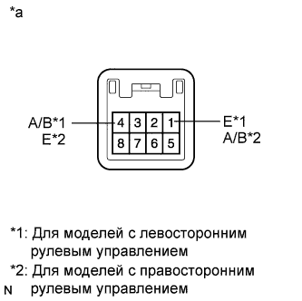

СИСТЕМА ИЗМЕРИТЕЛЬНЫХ ПРИБОРОВ И ИНДИКАТОРОВ > Неисправен переключатель Odo / Trip |
| 1.СНИМИТЕ ПОКАЗАНИЯ ПОРТАТИВНОГО ДИАГНОСТИЧЕСКОГО ПРИБОРА (ПЕРЕКЛЮЧАТЕЛЬ ODO/TRIP) |
Подсоедините портативный диагностический прибор к DLC3.
Установите замок зажигания в положение ON (ВКЛ).
Включите портативный диагностический прибор.
Войдите в следующие меню: Body Electrical / Combination Meter / Data List.
Проверьте значения в соответствии с таблицей ниже.
| Информация на дисплее прибора | Измеряемая величина / диапазон измерения | Нормальное состояние | Замечание по диагностике |
| ODO / TRIP Change SW | Состояние переключателя ODO/TRIP /OFF (ВЫКЛ) или ON (ВКЛ) | OFF (ВЫКЛ): Переключатель ODO/TRIP отпущен | - |
| ON (ВКЛ): Переключатель ODO/TRIP нажат |
|
| ||||
| OK | ||
| ||
| 2.ПРОВЕРЬТЕ ПЕРЕКЛЮЧАТЕЛЬ TRIP |
|  |
Отсоедините разъем G16 переключателя счетчика пути.
Проверьте переключатель ODO/TRIP.
Измерьте сопротивление в соответствии со значениями, приведенными в таблице ниже.
| Контакты для подключения диагностического прибора | Положение переключателя | Заданные условия |
| 4 (A/B) - 1 (E) | Переключатель ODO/TRIP во включенном состоянии (нажат) | Менее 1 Ом |
| Переключатель ODO/TRIP выключен (не нажат) | 1 МОм или более |
| Контакты для подключения диагностического прибора | Положение переключателя | Заданные условия |
| 1 (A/B) - 4 (E) | Переключатель ODO/TRIP во включенном состоянии (нажат) | Менее 1 Ом |
| Переключатель ODO/TRIP выключен (не нажат) | 1 МОм или более |
|
| ||||
| OK | |
| 3.ПРОВЕРЬТЕ ЖГУТ ПРОВОДОВ И РАЗЪЕМ (ЩИТОК ПРИБОРОВ В СБОРЕ – ПЕРЕКЛЮЧАТЕЛЬ СЧЕТЧИКА ПУТИ) |
Отсоедините разъем G6 щитка приборов.
Измерьте сопротивление в соответствии со значениями, приведенными в таблице ниже.
| Контакты для подключения диагностического прибора | Условие | Заданные условия |
| G6-11 (RSET) - G16-4 (A/B) | Всегда | Менее 1 Ом |
| G6-11 (RSET) - масса | Всегда | 10 кОм или более |
| Контакты для подключения диагностического прибора | Условие | Заданные условия |
| G6-11 (RSET) - G16-1 (A/B) | Всегда | Менее 1 Ом |
| G6-11 (RSET) - масса | Всегда | 10 кОм или более |
|
| ||||
| OK | ||
| ||